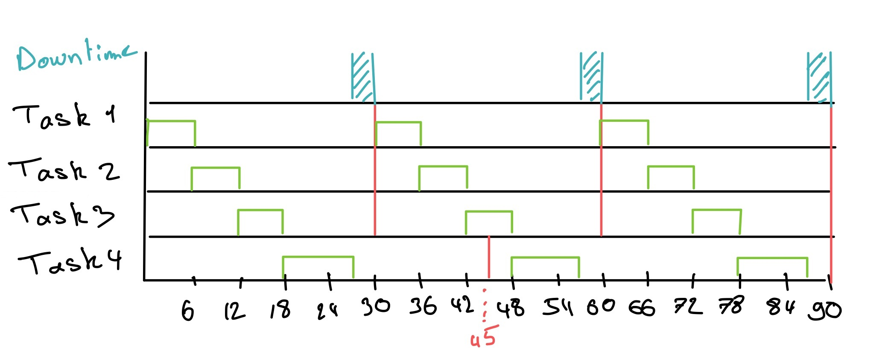

Name : Enzo SCAFI
This comprehensive report by Enzo SCAFI focuses on the analysis and implementation of a real-time operating system (RTOS) using FreeRTOS for managing various periodic tasks. The main objective is to examine task execution times, determine the Worst-Case Execution Time (WCET) for each task, establish system schedulability, and implement the scheduler with FreeRTOS using a Fixed-Priority (FP) scheduling model. Data collection involves simulating task executions through C language programs and a Python script automating the evaluation of execution times. The WCET determination results guide system sizing and adherence to time constraints. Schedulability analysis confirms the system's potential to meet its time constraints. Implementation with FreeRTOS incorporates fixed-priority scheduling, defining priorities and periods, creating queues for task communication, and launching tasks with fixed priorities. Results demonstrate reliable task execution within defined time constraints, validating the effectiveness of the chosen approach. In conclusion, this report provides a comprehensive overview of analyses and implementations, highlighting the system's consistency in a real-time environment.
In the realm of real-time operating systems (RTOS), the efficient orchestration of tasks is pivotal for ensuring the proper functioning of embedded systems. This final assignment embarks on the design and analysis of an RTOS tailored to manage a set of diverse tasks, each serving a distinct purpose. The project involves the creation of an RTOS capable of handling periodic, with a focus on task execution timing and scheduling using the FreeRTOS framework.
The identified tasks encompass functionalities, ranging from routine status reporting to mathematical operations and data manipulations. The periodic tasks include printing a status message, temperature unit conversion, large integer multiplication, and binary searching within a predetermined list.
To ensure the robustness and reliability of the RTOS, a thorough analysis of each task's execution times is indispensable. This analysis includes determining the Worst Case Execution Time (WCET) for each task, a critical parameter that establishes the maximum time a task can take to complete.
In the subsequent sections of this report, we delve into the methodology employed for task analysis, WCET determination, and system schedulability assessment. The tasks are scheduled using the Fixed Priority (FP) scheduling algorithm within the FreeRTOS framework.
Data collection is a crucial step in analyzing task execution times. For each task, we developed specific programs in the C language to simulate their execution and measure the required time. These programs were designed to reflect the real behavior of tasks in a real-time operating environment. The tasks were grouped as follows:
The programs were executed for a certain number of iterations for each task, and the longest time (Worst Case Execution Time - WCET) was recorded for each task. These results are essential to ensure performance predictability in a real-time environment.
Data collection relied on a Python script (test.py) designed to automate the execution of the periodic tasks defined in the C language program (test.c). This script was created to evaluate task execution times over a defined number of iterations, enabling statistical performance analysis. Here are some additional details about the Python script:
The Python script uses the subprocess module to execute the commands specified in the C program. The progress_bar function was added to display a progress bar during the iteration executions. The script runs each command for a certain number of iterations (in this example, 1000 iterations per command). At each iteration, the execution time of the command is extracted from the time command result using regular expressions. These times are then compared to determine the WCET for each task.
Each task underwent 1000 iterations to establish a robust maximum and identify the worst-case execution scenario. During each iteration, the progress bar shows the progress, providing visibility into the process. The outer loop of the script iterates over each specified command, while the inner loop repeatedly executes the command to collect execution times. These times are recorded and compared at each iteration to determine the WCET.
The results obtained are based on the worst-case observed during the 1000 iterations for each task. These results were displayed in the Python script output, showing the WCET for each task as well as the overall WCET for each task type. The use of a large number of iterations enhances result reliability by mitigating possible variations due to external factors. This approach provides a solid foundation for WCET determination.
The motivation behind the choice of WCET lies in the need to ensure reliable and predictable execution of tasks, even under adverse conditions. The selected values guarantee that, in worst-case scenarios, each task will meet its time constraints, thereby avoiding any critical deadline overruns.
The obtained results for each task allowed the determination of the Worst Case Execution Time (WCET). The WCET for each task is as follows:
These values represent the maximum time each task can take to execute and are crucial for properly sizing the system and ensuring adherence to real-time constraints.
In our approach, we decided to apply a safety margin of 50% to each individual WCET task. This decision ensures adequate flexibility to absorb potential variations in the execution times of different tasks.
The specific calculations for each periodic task
Let's apply this formula to our current results for each task:
WCET Task 1:
WCET Task 2:
WCET Task 3:
WCET Task 4:
Thus, by taking a 50% safety margin for each task, the required minimum WCET would be 6.0 ms, 6.0 ms, 6.0 ms, and 9.0 ms, respectively. These values ensure robust execution of each task while accounting for possible variations in execution times.
The longest execution times (WCET) for each task were determined experimentally: Task 1 takes 4.0 ms, Task 2 takes 4.0 ms, Task 3 takes 4.0 ms, and Task 4 takes 6.0 ms.
The constants
The periods of periodic tasks are determined by the following formula:
This condition must be satisfied for the system to be schedulable. The periods of periodic tasks are determined by the following formula:
Let's define
Let's isolate
So,
Therefore, we have the following periods:
Let's verify that the condition is satisfied:
Let's check if the condition is satisfied without considering the 50% error margin:
The condition is therefore satisfied.
After calculation, the condition is met, indicating that the system is potentially schedulable with the current periods. However, it is important to test.
| Task | C | T | P |
|---|---|---|---|
| 1 | 6.0 ms | 30.0 ms | 0 |
| 2 | 6.0 ms | 30.0 ms | 1 |
| 3 | 6.0 ms | 30.0 ms | 2 |
| 4 | 9.0 ms | 45.0 ms | 3 |
We have a total period of 72.0 ms.
We have set : configUSE_PREEMPTION to 1 in FreeRTOSConfig.h so we can use the preemption.

According to the diagram that I created, scheduling is achievable
In the implementation of the scheduler with FreeRTOS, we had to opt for an approach based on FP (Fixed Priority). Scheduling meet the real-time requirements of the system. Here's how I implemented this scheduling in the context of FreeRTOS:
Definition of Priorities:
Definition of Periods:
Queue Creation:
Task Creation:
prvPeriodicTask1 = print "Working"
prvPeriodicTask2 = Convert a fixed Fahrenheit temperature value to degree Celsius
prvPeriodicTask3 = Define any two long int big numbers and multiply them, print the result
prvPeriodicTask4 = Binary search a list of 50 elements
Scheduler Start:
In summary, the implementation uses the FP scheduling model of FreeRTOS to ensure that periodic tasks run respecting their respective priorities and associated time constraints. Queues facilitate communication between tasks, contributing to the system's consistency.
Following the implementation of the scheduler with FreeRTOS and the utilization of the Fixed Priority (FP) scheduling model, the obtained results align with the predefined expectations for each periodic task. Here is a sample of the system's output during its execution:
Periodic Task 1 (prvPeriodicTask1 - "Working"):
The task executes periodically, displaying the message "Working." The output indicates that the task occurs in accordance with the defined period of 30 ms.
Periodic Task 2 (prvPeriodicTask2 - "Temperature in Celsius"):
The task periodically converts a fixed temperature from Fahrenheit to Celsius (initial temperature: 75°F). The output shows the converted temperature (23.89°C) in line with the 30 ms period.
Periodic Task 3 (prvPeriodicTask3 - "Multiplication result"):
The task periodically performs multiplication of two long integers (1234567890 and 987654321). The output displays the multiplication result (1219326311126352690) adhering to the 30 ms period.
Periodic Task 4 (prvPeriodicTask4 - "Element found at index" and "Element not found"):
The task periodically conducts a binary search in a list of 50 elements to find element 42. The outputs indicate the success or failure of the search, with the index of the found element (41) in line with the 45 ms period.
These results demonstrate the proper functioning of the system, adhering to the defined time constraints for each task. The assigned fixed priorities ensure correct task scheduling, thereby ensuring predictability and reliability in a real-time environment.
In conclusion, this report has detailed the analysis and implementation of a Real-Time Operating System (RTOS) using FreeRTOS for managing a diverse set of periodic tasks. The project focused on task execution timing and scheduling, employing the Fixed Priority (FP) scheduling algorithm within the FreeRTOS framework.
Schedulability analysis verified the system's capability to meet its defined time constraints. The calculated periods for each periodic task, with consideration for safety margins (50%), indicated a potentially schedulable system. The implementation was further validated through the creation of a schedule diagram, affirming the feasibility of the scheduling approach.
The actual implementation of the scheduler with FreeRTOS involved the assignment of fixed priorities to tasks based on their criticality and time constraints. The successful creation of tasks, definition of periods, and establishment of communication through queues contributed to the system's consistency.
The results of the system's execution aligned with expectations, showcasing the adherence to defined time constraints for each periodic task. The fixed priorities assigned to tasks ensured proper scheduling, enhancing predictability and reliability in a real-time environment.